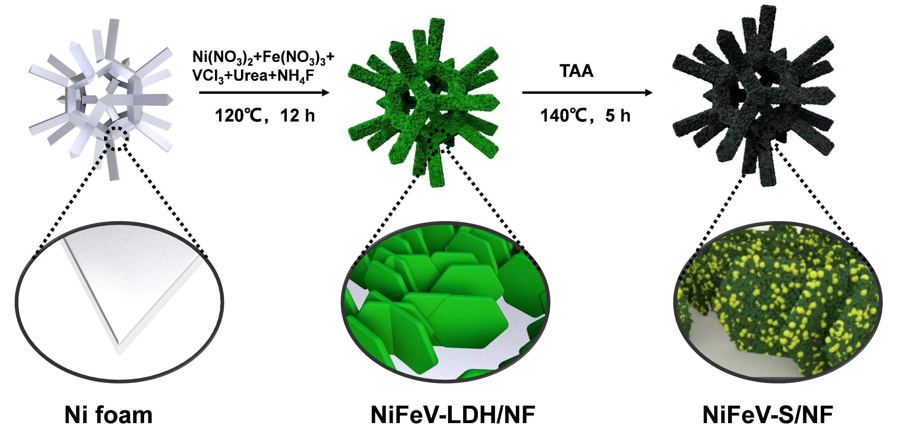
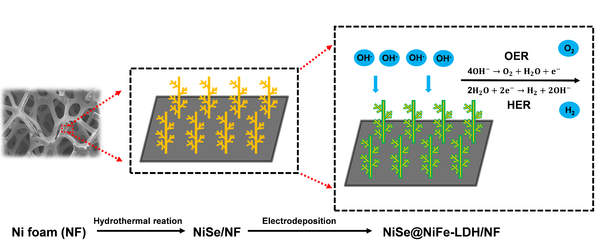
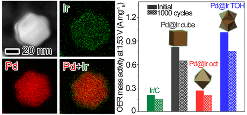
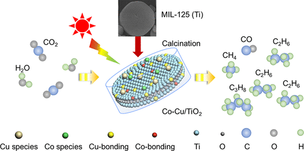

Research Experience
Advanced Battery Management System Research and Development
2022.07 - Present
- Spearheaded multiple BMS hardware and software development projects for next-generation electric vehicles, focusing on enhancing energy efficiency and battery longevity.
- Developed and implemented an innovative State of Charge (SOC) and State of Health (SOH) estimation algorithm based on adaptive Kalman filtering, achieving ±1% accuracy and extending battery cycle life by 5-8%.
- Engineered a real-time multi-parameter analysis system for monitoring critical battery parameters (temperature, voltage, current), leading to significant improvements in thermal runaway prevention algorithms.
- Conceptualized and implemented novel battery balancing control strategies, including adaptive multi-threshold control and predictive balancing algorithms, resulting in markedly improved battery consistency and overall pack performance.
- Authored two corporate standards and two comprehensive technical reports on advanced BMS technologies, contributing to the standardization of industry practices.
Synthesis of Multielemental Transition Metal Chalcogenides for Electrocatalytic Water Splitting
2021.04 - 2022.06
2.1 Synthesis and Electrocatalytic Performance of Ternary Transition Metal Sulfide NiFeV-S/NF
Figure 1: Schematic illustration of the synthesis of ternary metal sulfide NiFeV-S/NF.
- Developed a ternary transition metal sulfide NiFeV-S/NF catalyst via a two-step hydrothermal synthesis method to address the limitations of NiFe-LDH catalysts.
- Demonstrated superior electrocatalytic activity with overpotentials of 211 mV and 127 mV for OER and HER respectively, at a current density of 10 mA cm-2 in 1 M KOH.
- Fabricated a NiFeV-S/NF//NiFeV-S/NF electrolyzer for overall water splitting, demonstrating outstanding performance with a low cell voltage of 1.573 V at 10 mA cm-2.
Figure 2: (a) Overall water splitting performance curves of Ni foam, NiFeV-LDH/NF, and NiFeV-S/NF; (b) Comparison of overall water splitting performance at 10 mA·cm-2; (c) Stability test curve of NiFeV-S/NF for overall water splitting; (d) Overall water splitting performance curves of NiFeV-S/NF before and after stability test.
2.2 Synthesis and Electrocatalytic Performance of NiSe@NiFe-LDH/NF Heterojunction Catalyst
Figure 3: Schematic illustration of the synthesis of NiSe@NiFe-LDH/NF heterojunction catalyst.
- Conceptualized and fabricated a novel core-shell heterostructured bifunctional electrocatalyst (NiSe@NiFe-LDH/NF), combining the high conductivity of NiSe with the catalytic activity of NiFe-LDH.
- Achieved exceptional electrocatalytic activity in alkaline conditions, used as both cathode and anode for electrocatalytic water splitting requiring only 1.560 V to deliver a current density of 10 mA cm-2, surpassing the performance of previous catalysts.
- Conducted long-term stability tests to verify the durability enhancements provided by the core-shell architecture, contributing to the design of efficient and stable non-noble metal bifunctional catalysts.
Figure 4: (a) Overall water splitting performance curves of NiSe/NF, NiFe-LDH/NF, and NiSe@NiFe-LDH/NF; (b) Comparison of overall water splitting performance of catalysts; (c) Stability test curve of NiSe@NiFe-LDH/NF for overall water splitting; (d) Overall water splitting performance curves of NiSe@NiFe-LDH/NF before and after stability test.
Synthesis of Pd@Ir and Investigation of Ir Facet Effects on OER Activity
2020.05 - 2021.06
Figure 5: Preparation of Pd@Ir and study of the influence of different Ir crystal facets on OER activity.
- Developed a facile seed-mediated growth method to synthesize Pd@Ir core-shell nanocatalysts with controlled morphologies, employing facet-specific inhibitors and reaction kinetics control to tune the surface structure.
- Systematically investigated the structure-activity relationship of Ir-based catalysts by fabricating three Pd@Ir nanostructures with identical size but distinct surface facets, addressing the scalability limitations of Ir-based catalysts.
- Elucidated the facet-dependent OER mechanism through comprehensive electrochemical characterization and Density Functional Theory (DFT) calculations, revealing superior catalytic activity and durability of high-index faceted Pd@Ir nanostructures.
- Contributed to the publication "Unconventional high-index facet of Iridium boosts oxygen evolution reaction: How the Facet Matters" as the third author.
Rational Design of Co-Cu/TiO2 Photocatalyst for Efficient CO2 Conversion via MOF-Templated Synthesis
2017.10 - 2019.03
Figure 6: Preparation of Co-Cu/TiO2 using MIL-125(Ti) as a template and its study on CO2 conversion.
- Developed a MOF-templated synthesis strategy using MIL-125(Ti) to fabricate hierarchically porous Co-Cu co-doped TiO2 photocatalyst with precisely controlled surface composition and morphology.
- Elucidated the synergistic effect of Cu and Co dopants on charge carrier dynamics: Cu facilitates efficient photogenerated electron capture and separation, while Co acts as a hole trap and promotes H+ intermediate formation, enhancing C2+ product selectivity.
- Demonstrated superior photocatalytic performance in CO2 reduction with H2O, achieving high selectivity towards value-added C1-C3 products (CO, CH4, C2H6, and C3H8) under simulated solar irradiation.